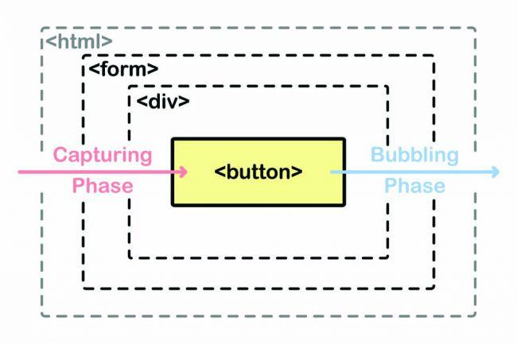

JavaScript
var element = document.getElementById('element');
Оператор разворота (ES6)
Позволяет разворачить элементы массива для передачи в качестве аргументов функций или в элементы другого массиваМассив
var staticLanguages = ['C', 'C++', 'Java'];
var dinamicLanguages = ['JavaScript', 'PHP', 'Ruby'];
var languages = [...staticLanguages, 'C#', ...dinamicLanguages, 'Python'];
// result: ['C', 'C++', 'Java', 'C#', 'JavaScript', 'PHP', 'Ruby']
Функция
function add(x,y,z) {
console.log(x + y + z);
}
var numbers = [1, 2, 3];
add(...numbers);
Назначение обработчиков событий
-
Стандартная модель событий (Распространение событий)
Event.CAPTURING_PHASE=1 (перехват) - идет от родительского до целевого (html -> body -> button). Выполняется сразу после того, как происходит событие. Событие начинается на самом верхнем уровне, которым является либо объект document, либо объект window в зависимости от события. Отсюда оно опускается, проходя через тег html и через то, что находится в этом теге, до тех пор, пока не достигнет элемента, в пределах которого оно возниклоEvent.AT_TARGET=2 (целевой элемент захвата)Event.BUBBLING_PAGE=3 (всплытие). В её ходе повторяется тот же процесс, но наоборот. Всё начинается с элемента, который вызвал событие, оно «всплывает» до корневого элемента html
1. Использование атрибута HTML
<button onclick="alert('action')">Action</button>
<button onclick="alert(this.innerHTML)">Вывести содержимое</button>
<button onclick="action()">Action</button>
2. Использование свойства DOM-объекта
<button id="element">Action</button>
element.onclick = function() {
alert(1);
}
<button id="element">Action</button>
element.onclick = action;
function action() {
alert(1);
}
3. addEventListener и removeEventListener
element.addEventListener(event, handler[, phase]);
element.removeEventListener(event, handler[, phase]);
event - имя события, например click
handler - ссылка на функцию, которую нужно поставить обработчиком
phase - необязательный аргумент, «фаза», на которой обработчик должен сработать
<button id="element">Action</button>
function action() {
alert(1);
}
var element = document.querySelector('#element');
element.addEventListener('click', action);
element.removeEventListener('click', action);
Метод addEventListener позволяет добавлять несколько обработчиков на одно событие одного элемента
Делегирование событий
Делегирование событий - техника, которая использует механизм всплытия событий. Добавляя прослушиватель к родительскому элементу, разработчик может наладить обработку событий для его потомков- Внутри функции обратного вызова прослушивателя события целевой элемент события будет представлен параметром target, который можно использовать для принятия решения о дальнейших действиях. Например, атрибут этого параметра data может хранить идентификатор для доступа к свойствам объекта
parentEl.addEventListener('click', function(e) {
if(e.target && e.target.nodeName == 'BUTTON') {
// щелчок по кнопке
}
});
Передаваемый параметр (Event)
Event - объект созданный перед запуском события
var btn = document.getElementById('btn');
btn.addEventListener('click', getButton);
function getButton(e) {
console.log(e.type); // название события
console.log(e.target); // инициатор события
console.log(e.currentTarget); // элемент на котором висит обработчик
console.log(e.eventPhase); // число, указывающее этап (Event.CAPTURING_PHASE=1, Event.AT_TARGET=2, Event.BUBBLING_PAGE=3)
console.log(e.timeStamp); // объект Date, указывающий, когда произошло событие
console.log(e.bubbles); // true если событие может всплывать по дереву элементов. события blur, focus, load, unload не всплывают
console.log(e.cancelable); // true если с этим событием связано действие по умолчанию и его можно отменить preventDefault
e.preventDefault(); // отключение действия события по умолчанию
}
Список событий
События мыши
click - одиночный клик левой кнопки мышиcontextmenu - одиночный клик правой кнопкой мышиmouseover - наведение мышиmousedown - нажатие кнопки мышиmouseup - отпускание кнопки мышиmousemove - передвижение мышиmouseout - увод мышиdblclick - двойной щелчек левой кнопки мыши
События на элементах управления
submit - момент отправки формы обработчику (если кнопка типа "submit")focus - момент получения фокуса объектом (работает и для ссылок)blur - момент потери фокуса объектом (работает и для ссылок)change - изменение объекта формы (поле, радиобаттон и т.д.)reset - сброс формы (специальной кнопкой)
Клавиатурные события
keydown - момент нажатия клавиши, до момента отпусканияkeyup - момент отпускания клавишиkeypress - нажатие клавиши на клавиатуре
События документа
DOMContentLoaded - возникает после окончательной загрузки и парсинга HTML-документа, не дожидаясь загрузки стилей, картинок и фреймовload - возникает после полного окончания загрузки ресурса (всех картинок, стиле и прочего)resize - изменение размеров окна браузераscroll - прокрутка страницыunload - уход со страницы
События CSS
transitionend - когда CSS-анимация завершена
Обработчики событий (примеры)
// полная загрузка страницы
window.onload = function() {
//
}
# использование значения keyCode событий - устаревшая практика
# и может не поддерживаться в новых браузерах
// обработка нажатия кнопки и вывод ее кода
window.onkeydown = function(event) {
console.log(event.keyCode);
}
// отслеживание изменения hash
window.onhashchange = function() {
var a = location.hash.slice(1);
}
// click на элемент
element.onclick = function() {
//
}
// выбрать все input и повесить обработчик focus
var items = document.querySelectorAll('.item');
for(var i=0; i<=items.length-1; i++) {
items[i].addEventListener('focus', function() {
this.style.border = '2px solid blue';
})
}
Map (ES6)
- Используется для трансформации массива
- Объект map, ассоциативный массив
- Ключом может быть различные типы данных, не только строки и символы как у объекта
- Можно перебрать в цикле for...of
- Нет литеральной формы, поэтому используется конструктор new
- Объект map в отличие от обычного объекта является перебираемым объектом, который можно пербирать в цикле for...of
var names = ['HTML', 'CSS', 'JavaScript'];
var nameLengths = names.map(function(name) {
return name.length;
});
// получили массив с длинами
alert(nameLengths); // 4,3,10
Задание значений при объявлении
const map = new Map([
['Hi', 'Привет'],
[42, 'Ответ на главнй вопрос'],
[true, false],
[{}, 'Объект'],
[function() {}, 'Функция']
]);
Основные методы
const map = new Map();
map.set (42, 'Ответ на главный вопрос'); // установить значение
var a = map.get (42); // получить значение
var a = map.size ; // получить кол-во элементов
var a = map.has (42); // проверка наличия значения
map.delete (42); // удалить значение
map.clear (); // удалить все значения
var a = map.keys (); // возвращает перебираемый объект с ключами
var a = map.values (); // возвращает перебираемый объект с значениями
var a = map.entries (); // возвращает массив массивов
Перебор map
for(let [key, value] of map) {
console.log(key, value);
}
map.forEach((value, key, map) => console.log(value, key));
Примеры
const map = new Map();
map.set('HTML', 'HyperText Markup Language')
.set('CSS', 'Cascading Style Sheets')
.set('JS', 'JavaScript');
keys()
// обратно получаем не массив, а объект MapIterator (объект для перебора)
console.log(map.keys()); // MapIterator {"HTML", "CSS", "JS"}
// получить объекты по порядку можно используя оператор распространения
console.log(...map.keys()); // HTML CSS JS
// можно получить массив обернув в []
console.log([...map.keys()]); //["HTML", "CSS", "JS"]
values()
console.log([...map.values()]); // ["HyperText Markup Language", "Cascading Style Sheets", "JavaScript"]
entries()
console.log([...map.entries()]); // массив массивов
// можно использовать для клонирования map
const map2 = new Map(map.entries());
// получить ключ:значение с помощью реструктруризации
const [first, second, third] = map;
console.log(first); // ["HTML", "HyperText Markup Language"]
console.log(second); // ["CSS", "Cascading Style Sheets"]
console.log(third); // ["JS", "JavaScript"]
const [[key, value], second, third] = map;
console.log(key); // HTML
console.log(value); // HyperText Markup Language
Деструктивное присваивание массивов (ES6)
var languages = ['JavaScript', 'Python', 'Ruby'];
// ES5
var js = languages[0];
var py = languages[1];
var rb = languages[2];
Деструтивное присваивание
var languages = ['JavaScript', 'Python', 'Ruby'];
var [js, py, rb] = languages;
Игнорирование значения
var scores = [3, 4, 5];
var [low, , high] = scores;
Преобразование в массив оставшихся значений
var scores = [3, 4, 5];
var [low, ...rest] = scores;
Значение по умолчанию
var scores = [3, 4];
var [low, mid, high=5] = scores;
Значение из массива
var scores = [3, 4, [5, 6]];
var [low, mid, [high, higher]] = scores;
Деструктивное присванивание как параметр функции
function cumputeScore([low, mid]) {
console.log(low, mid);
}
cumputeScore([3, 4]);
Деструктивное присвание для возврата нескольких значений из функции
function getScores() {
return [3, 4, 5];
}
var [low, mid, high] = getScores();
Пример #1. Быстрый обмен значений переменнных
var yes = 'Yes';
var no = 'No';
[yes, no] = [no, yes];
Деструтивное присваивание объектов (ES6)
var person = {
firstname: 'Tony',
lastname: 'Stark'
};
// ES5
var firstname = person.firstname;
var lastname = person.lastname;
Деструтивное присваивание объектов
// имена переменных должны совпадать с именами свойст объекта
var {firstname, lastname} = person;
Изменение имен переменных
var {firstname:first, lastname:last} = person;
Значение по умолчанию
var {firstname, lastname, age=25} = person;
Динамическое определение имен свойст с помощью выражения в []
var {['first'+'name']:first, lastname} = person;
Извлечение свойств вложенных объектов
var user = {
firstname: 'Tony',
lastname: 'Stark',
social: {
facebook: 'tonystark',
twitter: 't-stark'
}
};
var {firstname, lastname, social:{facebook}} = user;
Использование в качестве параметра функции
var user = {
firstname: 'Tony',
lastname: 'Stark'
};
function post(url, {data:{firstname, lastname}, cache}) {
console.log(firstname, lastname, cache);
}
var result = post('api/users', {data:user, cache:false});
Возврат нескольких значений из функции
function getUser() {
return {
firstname: 'Tony',
lastname: 'Stark'
};
}
var {firstname, lastname} = getUser();
Symbol (ES6)
Символ - уникальные и неизменные значения, позволябщие разработчикам языка добавлять новые идентификаторы или свойства объектов, не резервируя строковые названия для этих свойств- Нельзя использовать ключевое слово
new
// создание символа
var symbol1 = Symbol();
// создание символа
var symbol2 = Symbol.for('name');
// получить имя символа
var name = Symbol.keyFor(symbol2);
// задание необязательного аргумента, в котором указывается имя для символа
// имя можно использовать описания символа (полезно для отладки)
var symbol3 = Symbol('name');
// задание свойства объекта
var user = {
username: 'r2d2',
[Symbol.for('password')]: 'c3po'
};
var password = user[Symbol.for('password')];
console.log(password);
// просмотреть символы у объекта
console.log(Object.getOwnPropertySymbols(user));
// встроенные символы
// хорошо известные символы
var obj = {
iterator: 0,
[Symbol.iterator]() {}
}
// Symbol.iterator используется конструкцией for...of
// благодаря которой можно перебирать (итерировать) объект
ECMAScript
ECMAScript является стандартом, а JavaScript — это самая популярная реализация этого стандарта
ES1 (1997)
ES2 (1998)
ES3 (1999)
ES4 (не была принята)
ES5 (2009)
ES6 (ES2015)
ES7 (ES2016)
ES8 (ES2017)
Выборка элементов страницы
var a = document.getElementById('item'); // по id
var a = document.getElementsByClassName('item')[0]; // по названию класса (первый элемент)
var a = document.getElementsByName('item'); // по атрибуту name
var a = document.getElementsByTagName('img'); // по названию тега (все элементы)
var a = document.querySelector('.nav.bar'); // возвращает первый элемент внутри документа
var a = document.querySelectorAll('.nav'); // возвращает список элементов в пределах документа
Методы getElementsByTagName и т.д. вызывают не обычные массивы, а живые коллекции
Форма
var a = document.forms[0]; // первая форма на странице
var a = document.myform; // форма с name=myform (если name уникальный)
var a = document.forms[0].elements[0]; // первый элемент в форме
var a = document.forms[0].element; // элемент в форме с name=element
var a = document.forms['nameForm']['nameField']; // поле формы
Изображение
var a = document.images.logo; // img с name=logo
var a = document.images['logo']; // img с name=logo
var a = document.logo; // img с name=logo (если name уникальный)
Выбор родственных элементов
var a = element.childNodes; // дети (включая текстовые узлы)
var a = element.children; // дети (не включая текстовые узлы)
var a = element.parentNode; // родитель
var a = element.nextSibling; // следующий брат
var a = element.previousSibling; // предыдущий брат
var a = element.firstChild; // первый ребенок
var a = element.lastChild; // последний ребенок
var a = document.childNodes; // дети с doctype и комментариями
var a = document.children; // дети
var a = document.children[0].children[1].children; // выборка всех элементов из body
Методы элементов страницы
element.innerText = 'new text'; // текст (не выводит невидимые элементы)
element.textContent = 'new text'; // текст
element.innerHTML = '<h2>new text</h2>'; // html
element.id = 'name';
element.className = 'nameClass1 nameClass2';
element.href = 'https://www.google.com/';
element.src = 'image.jpg';
element.offsetTop; // отступ от верха документа
Шаблонные строки (ES6)
var a = `
первая строка
вторая строка
`;
Интерполяция
var a = 'text';
var b = `строка текста ${a} строка текста`;
Тегирование
Изменение вида шаблонов при помощи функций
var name = 'Tony';
console.log(upperName`Hello ${name}`);
// literals - массив строковых литералов
// name - значение вычисленных выражений
function upperName(literals, value) {
return literals[0] + value.toUpperCase();
}
Словарь
Statements (инструкции) - var statementExpressions (выражения) - stetement = 2+7Operators (операторы) - арифметические, сравнения, условные, логические, побитовыеЛитерал - любое значение указанное явным образом в коде. В качестве литералов в js могут выступать числа, строки (текстовые значения), логические значенияlet, const - блочная область видимостиvar - функциональная область видимости
Типы данных
1. Number - число (примитивный)
2. String - cтрока (примитивный)
3. Boolean - булевый, логический (примитивный)
4. null - специальное пустое или неизвестное значение (присваивается самостоятельно)
5. undefined - специальное неприсвоеное значение (возвращается из js)
6. Object - объект
7. Symbol - символ (примитивный) ES6
Специальные числовые значения
typeof - возвращает тип аргумента
typeof undefined // "undefined"
typeof 0 // "number"
typeof true // "boolean"
typeof 'foo' // "string"
typeof {} // "object"
typeof null // "object" (*)
typeof function(){} // "function" (*)
// проверка поддержки свойств
typeof addEventListener !== 'undefined'
Преобразование типов
String(77);
Number('77');
Boolean(77);
77 + ''; // string
+'77'; // number
!!'77'; // boolean
77.toString();
parseInt('77px');
parseFloat('77.2px')
Способы создания переменных
1. Литеральная форма
var a = 'string';
2. Конструктор
var a = new String('string');
var a = new Number(77);
var a = new Boolean(true);
Object Wrappers
typeof 'string'; // "string"
typeof new String('string'); // "object"
- Объект-обертка вокруг примитивного типа данных создается вызовом конструктора new
- Или при использовании методов для строк и чисел
- Иначе это является примитивным типом данных (string, number, boolean)
// позволяет достать строку из объекта
var str = new String('string');
console.log(str.valueOf());
- Глобальная переменная относится к глобальному объект window
- Переменная без var попадает в глобальную область видимости
- Переменная совершают поднятие hoisting, но значение будет undefined
Условные операторы
Условный оператор case()
Использование цифр в виде аргумента
switch(Number(id)) {
case 1: alert(id); break;
case 2: alert(id); break;
case 3: alert(id); break;
default: alert("default");
}
switch(name) {
case 'name1': alert(name); break;
case 'name2': alert(name); break;
case 'name3': alert(name); break;
default: alert("default");
}
Условный оператор if()
if (year < 2011) {
alert('Это слишком рано..');
} else if (year > 2011) {
alert('Это поздновато..');
} else {
alert('Да, точно в этом году!');
}
Тернарный оператор
- условие ? значение1 : значение2
- если условие верно – возвращается значение1, если неверно – значение2
// if … else
if (age > 14) {
access = true;
} else {
access = false;
}
// Тернарный оператор
access = (age > 14) ? true : false;
// if … else
if(apple == orange) {
res = "Равно";
} else {
res = "Не равно";
}
// Тернарный оператор
res = (apple == orange) ? "Равно" : "Не равно";
Перебор массива
forEach - для перебора массиваfilter - для фильтрации массиваmap - для трансформации массива в массивevery/some - для проверки массиваreduce/reduceRight - для прохода по массиву с вычислением значения
forEach
- Ничего не возвращает, используется только для перебора
var arr = ["Яблоко", "Апельсин", "Груша"];
arr.forEach(function(element, index, arr) {
console.log( index + ": " + element + " (массив:" + arr + ")" );
});
// "0: Яблоко (массив:Яблоко,Апельсин,Груша)"
// "1: Апельсин (массив:Яблоко,Апельсин,Груша)"
// "2: Груша (массив:Яблоко,Апельсин,Груша)"
filter
- Используется для фильтрации массива через функцию
- Создаёт новый массив, в который войдут только те элементы arr, для которых вызов callback(item, i, arr) возвратит true
var arr = [1, -1, 2, -2, 3];
var positiveArr = arr.filter(function(number) {
return number > 0;
});
alert(positiveArr); // 1,2,3
map
Ссылка
every/some
- Используется для проверки массива
- Метод «arr.every(callback[, thisArg])» возвращает true, если вызов callback вернёт true для каждого элемента arr
- Метод «arr.some(callback[, thisArg])» возвращает true, если вызов callback вернёт true для какого-нибудь элемента arr
var arr = [1, -1, 2, -2, 3];
function isPositive(number) {
return number > 0;
}
alert( arr.every(isPositive) ); // false, не все положительные
alert( arr.some(isPositive) ); // true, есть хоть одно положительное
reduce/reduceRight
- Используется для последовательной обработки каждого элемента массива с сохранением промежуточного результата
- arr.reduce идёт по массиву слева-направо
- arr.reduceRight идёт по массиву справа-налево
arr.reduce(callback[, initialValue])
-
callback(previousValue, currentItem, index, arr)
previousValue - последний результат вызова функции, «промежуточный результат»currentItem - текущий элемент массива, элементы перебираются по очереди слева-направоindex - номер текущего элементаarr - обрабатываемый массив
-
initialValue - начальное значение
- Если есть
initialValue , то на первом вызове значениеpreviousValue будет равноinitialValue - Если нет
initialValue , то оно равно первому элементу массива, а перебор начинается со второго
// сумма элементов массива
var arr = [1, 2, 3, 4, 5]
// для каждого элемента массива запустить функцию,
// промежуточный результат передавать первым аргументом далее
var result = arr.reduce(function(sum, current) {
return sum + current
});
alert(result); // 15
Циклы
Цикл for
for (var i = 1; i < 10; i++) {
console.log(i);
}
Цикл while
var i = 0;
while (i < 10) {
console.log(i);
i++;
}
Цикл do while
var i = 0;
do {
console.log(i);
i++;
} while (i < 10);
break // выход из цикла
continue // прекращает выполнение текущей итерации цикла и переходит на следующую
Массивы
- Массив - это объект, где в качестве ключей выбраны цифры, с дополнительными методами и свойством length
- Так как это объект, то в функцию он передаётся по ссылке
- Нет причин использовать массив как обычный объект, хотя технически это и возможно
Объявление
var arr = []; // объявление пустого массива
var arr = ['Tony', 'Anne']; // объявление массива из заполненных элементов
var arr = [,,'Tony']; // пропуск элементов
var arr = new Array(5); // объявление массива из пустых элементов с длиной 5 (конструктор)
var arr = new Array('Tony', 'Anne'); // объявление массива (конструктор)
Методы
arr.push ('Jack', 'Tony'); // добавляет элементы в конец
arr.unshift ('Jack', 'Tony'); // добавляет элементы в начало
arr.pop (); // удаляет и возвращает последний элемент
arr.shift (); // удаляет и возвращает первый элемент
var a = colors.indexOf ('white'); // возвращает первый индекс, по которому элемент может быть найден в массиве или -1, если индекса нет
var a = colors.lastIndexOf ('white'); // возвращает последний индекс, по которому данный элемент может быть найден в массиве или -1, если такого индекса нет
var a = arr.join ('.'); // преобразование массива в строку с заданным разделителем
var arr = str.split (';'); // преобразование строки с заданным разделителем в массив
var arr2 = arr1.slice (1, 7); // копировать с 1 до 7 не включая, если не указан второй аргумент, то до конца
var arr2 = arr1.slice (1); // копировать с 1 до конца
var arr2 = arr.slice (-2); // копировать c 2 элемента с конца и дальше
var arr2 = arr.slice (); // копировать весь массив
arr.splice (3, 2); // удалить с 3 индекса 2 элемента
arr.splice (2, 0, 'Алина', 'Марина'); // добавление элементов
arr.splice (1, 2, 'Алексей", "Билл'); // замена элементов (заменить 2 удаленных элемента на Алексей, Билл)
arr.splice (-1, 1); // удалить с последнего индекса-1 1 элемент (отрицательная позиция отсчитывается с конца)
var a = arr.length ; // длина массива (индекс последнего элемента)
arr.reverse (); // меняет порядок элементов в массиве на обратный
var arr = arr1.concat (arr2, arr3); // создаёт новый массив, в который копируются элементы из массивов
arr.sort (); // сортировка по алфавиту, преобразуя элементы к строке
// свой порядок сортировки (сортировка чисел)
var arr = [1, 12, 2];
arr.sort(function(a, b) {
if (a > b) return 1;
if (a < b) return -1;
});
console.log(arr); // 1, 2, 15
Примеры
arr['someIndex'] = 'someValue'; // использование строки в виде индекса
arr.length = 10; // все элементы больше 10 индекса будут удалены
delete arr[4]; // присваивание элементу по индексу 4 undefined
var a = Array.isArray(arr); // проверка на массив
Массивы обьектов
var a = new Array(
{"name":"Андрей", "email":"andry@mail.ru"},
{"name":"Анна", "email":"anna@mail.ru"}
);
console.log(a[0].name); // "Андрей"
console.log(a[1].email); // "anna@mail.ru"
Примеры
// перебор массива
for (var i=0; i<=arr.length-1; i++) {
console.log(arr[i]);
}
// перебор массива и удаление выбранного элемента
var id = 12;
for (var i=0; i<=arr.length-1; i++) {
if (id == arr[i]) {
arr.splice(i, 1);
break;
}
}
// добавление нового элемента в массив
if (arr != '') {
arr[arr.length] = id;
} else {
arr[0] = id;
}
// удаление элемента массива
arr.splice(arr.indexOf(String(id)), 1);
Строки
- Строки в JavaScript имеют внутреннюю кодировку Юникод
var a = str.length ; // длина строки
77.toString() ; // преобразование в строку
var arr = str.split (';'); // преобразование строки с заданным разделителем в массив
var str = str.trim (); // обрезает пробелы с начала и конца строки
var name = name.toUpperCase (); // верхний регистр
var name = name.toLowerCase (); // нижний регистр
Поиск в строке совпадений с образцом
var pos = str.indexOf ('name'); // с начала (-1 не найдено)
var pos = str.indexOf('name', 2); // поиск начат с позиции 2
var pos = str.lastIndexOf ('name'); // с конца (-1 не найдено)
Взятие подстроки: substring, substr, slice
- Отрицательные значения отсчитываются от конца строки
var root = str.slice (1, 7); // вырезать с 1 позиции до 7 позиции не включая
var root = 'testme'.slice(-2); // 'me', от 2 позиции с конца
var root = 'testme'.slice(1, -1); // "estm", от 1 позиции до первой с конца
- Отрицательные аргументы интерпретируются как равные нулю
- Слишком большие значения усекаются до длины строки
- Если start > end, то аргументы меняются местами, т.е. возвращается участок строки между start и end
var root = str.substring (1, 7); // вырезать с 1 позиции до 7 позиции не включая
var root = str.substring(1); // вырезать с 1 позиции до конца строки
var root = 'testme'.substring(-2); // 'testme', -2 становится 0
var root = 'testme'.substring(4, -1); // 'test', -1 становится 0 -> получили substring(4, 0), 4 > 0, так что аргументы меняются местами -> substring(0, 4) = "test"
var root = str.substr (1, 4); // вырезать с 1 позиции 4 символа
var root = str.substr(1); // вырезать с 1 позиции до конца строки
charAt, charCodeAt
var root = charAt (2); // возвращает символ строки по индексу
var root = charCodeAt (2); // возвращает код символа строки по индексу (все русские буквы находятся в диапазоне от 1040 до 1103)
alert( "".charAt(0) ); // пустая строка
alert( "" [0] ); // undefined
Примеры
Перебор строки
for (var i=0; i <= str.length-1; i++) {
console.log(str[i]);
}
Длина числа
var id = 100;
var a = id.toString().length;
Сложение
"Blink" + 181 + 1; // "Blink1811"
"Blink" + (181 + 1); // "Blink182"
Экраснирвание кавычек
'\n' // перенос строки
alert('привет \n мир'); // вывод переноса строки
"call me \"ziggy\" now"; // экранирование кавычек
Проверка на заполненное поле
var login = '';
var password = '';
isFormValid() {
return login.length > 0 && password.length > 0;
}
Числа
num.toFixed(2); // фиксирование кол-ва знаков после запятой
123456789.toLocaleString(); // вывод чисел в стандарте ECMA (result = 402 123 456 789)
Number(num); // преобразование любого объекта в число
parseInt(num); // преобразование в целое число
parseFloat(num); // преобразование в целое/дробное число ('50.5px', вернет значение "50.5"
+'50.5'; // преобразование в целое/дробное число
isNaN
- isNaN преобразует к числу пустую строку, строку из пробельных символов, значения false, true, null
isNaN(num); // если в переменной не число, вернет истину
isFinite
- isFinite(n) преобразует аргумент к числу и возвращает true, если это не NaN/Infinity/-Infinity
alert( isFinite(1) ); // true
alert( isFinite(Infinity) ); // false
alert( isFinite(NaN) ); // false
Infinity
- Infinity больше любого числа
- Добавление к бесконечности не меняет её
alert( 1 / 0 ); // Infinity
alert( 12345 / 0 ); // Infinity
alert( -1 / 0 ); // -Infinity
var x = Infinity; // Infinity можно присвоить и в явном виде
NaN
- NaN (Not-A-Number)
- Значение NaN используется для обозначения математической ошибки
- Значение NaN – единственное в своем роде, которое не равно ничему, включая себя
alert( 0 / 0 ); // NaN
alert( NaN + 1 ); // NaN
Перебор в двоичную систему отсчета
parseInt("11000", 2); // переводит строку с двоичной записью числа в число
n.toString(2); // получает для числа n запись в 2-ной системе в виде строки
var access = parseInt("11000", 2); // получаем число из строки
alert(access); // 24, число с таким 2-ным представлением
var access2 = access.toString(2); // обратно двоичную строку из числа
alert(access2); // 11000
Операторы
Остаток от деления
alert(5 % 2); // 1, остаток от деления 5 на 2
alert(8 % 3); // 2, остаток от деления 8 на 3
alert(6 % 3); // 0, остаток от деления 6 на 3
Инкремент/декремент
i++ постфиксная форм++i префиксная форма
var i = 1;
var a = ++i;
alert(a); // 2
var i = 1;
var a = i++;
alert(a); // 1
Math
Math.round(num); // округляет число к ближайшему целому (5 округляется вверх)
Math.ceil(num); // округляет число в большую сторону
Math.floor(num); // округляет число в меньшую сторону
var rand = Math.random(); // генерация случайного числа от 0 (включительно) до 1 (не включая)
var rand = Math.round(Math.random() * 100); // от 0 до 100
var a = Math.pow(4,2); // степень 4 в 2
var a = Math.sqrt(400); // квадратный корень числа
var a = Math.abs(-7); // модуль
var a = Math.max(1, 2, 3, 4); // большее число из аргументов
var a = Math.min(1, 2, 3, 4); // меньшее число из аргументов
var a = Math.exp(2); // возведение часла "e" в указанную степень
var a = Math.log(5); // натуральный логарифм числа
var a = Math.PI; // число PI
var a = Math.E; // чисто E
var a = Math.sin(1); // синус (радиан)
var a = Math.cos(1); // косинус
var a = Math.tan(1); // тангенс
var a = Math.atan(1); // арктангенс
var a = Math.asin(1); // арксинус
var a = Math.acos(1); // арккосинус
Пример Random(min, max)
function mtRand(min, max) {
return Math.floor(Math.random() * (max - min + 1));
//return Math.random() * (max - min) + min;
}
Дата и время
Moment.js
Создание
new Date (year, month, date, hours, minutes, seconds, ms)
var selectDate = new Date(2012,0,1,0,0,0); // объявление для заданной даты
var nowDate = new Date(); // текущее дата и время на компьютере пользователя
Установка значений
var selectDate = new Date(2012,0,1,0,0,0);
selectDate.setMinutes (25); // установка минут
setSeconds.setSeconds (25); // установка секунд
...
Получение значений
var nowDate = new Date();
var yearFull = nowDate.getFullYear() ; // год (4 цифры)
var month = nowDate.getMonth() ; // месяц (от 0 до 1)
var day = nowDate.getDate() ; // число месяца (от 1 до 31)
var dayWeek = nowDate.getDay() ; // день недели (от 0-воскресенье до 6-суббота)
var hour = nowDate.getHours() ; // час
var minutes = nowDate.getMinutes() ; // минуты
var seconds = nowDate.getSeconds() ; // секунды
var mseconds = nowDate.getMilliseconds() ; // миллисекунды
Date.parse
-
Формат представления даты
YYYY-MM-DD - дата в формате год-месяц-день- Обычный символ
T используется как разделитель HH:mm:ss.sss – время: часы-минуты-секунды-миллисекунды- Часть
'Z' обозначает временную зону – в формате+-hh:mm , либо символZ , обозначающий UTC
-
Date.parse(str)
- Метод
Date.parse(str) разбирает строку str в таком формате и возвращает соответствующее ей количество миллисекунд. Если это невозможно,Date.parse возвращает NaN
var msUTC = Date.parse('2012-01-26T13:51:50.417Z'); // зона UTC
alert( msUTC ); // 1327571510417 (число миллисекунд)
var ms = Date.parse('2012-01-26T13:51:50.417-07:00'); // С таймзоной -07:00 GMT
alert( ms ); // 1327611110417 (число миллисекунд)
toLocaleString
var date = new Date(2014, 11, 31, 12, 30, 0);
var options = {
era: 'long',
year: 'numeric',
month: 'long',
day: 'numeric',
weekday: 'long',
timezone: 'UTC',
hour: 'numeric',
minute: 'numeric',
second: 'numeric'
};
alert( date.toLocaleString ("ru", options) ); // среда, 31 декабря 2014 г. н.э. 12:30:00
alert( date.toLocaleString ("en-US", options) ); // Wednesday, December 31, 2014 Anno Domini 12:30:00 PM
var a = nowDate.toLocaleTimeString() ; // время с учетом локализации
var a = nowDate.toLocaleDateString() ; // дата с учетом локализации
// вывод зависит от браузера
var d = new Date();
var a = d.toString() ; // возвращает дату целиком 'Wed Jan 26 2011 16:40:50 GMT+0300'
var a = d.toDateString() ; // возвращает только дату
var a = d.toTimeString() ; // возвращает только время
GMT и UTC
- Все методы, указанные выше, возвращают результат для местной временной зоны
- Существуют также UTC-варианты этих методов, возвращающие день, месяц, год и т.п. для зоны GMT+0 (UTC): getUTCFullYear(), getUTCMonth(), getUTCDay() и т.д.
var a = nowDate.getHours(); // время по гринвичу (GMT)
var a = nowDate.getUTCHours() ; // время в формате UTC
var a = nowDate.getTimezoneOffset() ; // возвращает разницу между местным и UTC-временем, в минутах.
Другие методы
var a = nowDate.toTimeString() ; // вывод времени в виде строки
var a = nowDate.toDateString() ; // вывод даты в виде строки
var selectDate = new Date(2012,0,1,0,0,0);
var a = selectDate.getTime() ; // возвращает число миллисекунд, прошедших с 1 января 1970 года GMT+0
var timeInMs = Date.now (); // возвращает количество миллисекунд, прошедших с 1 января 1970 года 00:00:00 по UTC.
Примеры
Вывод текщей даты
var weekday = ['Воскресенье', 'Понедельник', 'Вторник', 'Среда', 'Четверг', 'Пятница', 'Суббота'];
var month = ['Января', 'Февраля', 'Марта', 'Апреля', 'Мая', 'Июня', 'Июля', 'Августа', 'Сентября', 'Октября', 'Ноября', 'Декабря'];
var nowDate = new Date();
var nowDay = weekday[nowDate.getDay()];
var nowDate = nowDate.getDate();
var nowMonth = month[nowDate.getMonth()];
Разность дат
var start = new Date; // засекли время
// что-то сделать
for (var i = 0; i < 100000; i++) {
var doSomething = i * i * i;
}
var end = new Date; // конец измерения
console.log( "Цикл занял " + (end - start) + " ms" );
Исключения
Создание исключений
var calculate = function(n) {
if (n>10) {
throw new Error('n должно быть больше 10');
}
return n;
}
calculate(20);
Обработка исключений
try {
// инструкции, которые могут бросить исключение
} catch (идентификатор) {
// инструкции будут выполняться если в try произошло исключение
// передается выражение (идентификатор), которое было в throw
} finally {
// инструкции будут выполняться независимо от исключения
}
// catch или finally может отсутствовать
// если ошибка необработана, скрипт не будет выполняться
// если ошибка обработана в catch, скрипт продолжит выполнение
var calculate = function(n) {
if (n>10) {
throw new Error('n должно быть больше 10');
}
return n;
}
try {
calculate(20);
} catch(e) {
console.log('Ошибка функции calculate() ' + e.message);
}
Таймеры
setTimeout
-
setTimeout(code, time); - однократное выполнение кода через некоторое время
code - код или функцияtime - время в миллисекундах, которое должно пройти до выполнения кода (1000 миллисекунд = 1 секунда)
var timer = setTimeout("console.log('go');", 1000);
var timer = setTimeout(function() { console.log('go'); }, 1000);
var timer = setTimeout(func, 1000);
function func () {
console.log('go');
}
clearTimeout(timer); // отменяет выполнение setTimeout
setInterval
setInterval(); // повторение выполнения кода через определенное время
clearInterval(); // отменяет выполнение setInterval()
var timer = setInterval("console.log('go');", 1000);
clearInterval(timer); // остановка setInterval
Отмена обычного поведения элемента
preventDefault(); // отмена обычного поведения элемента
return false - аналогично preventDefault(), но дальнейший код не выполняется
element.onclick = function(event) {
event.preventDefault();
// return false ;
};
Console
console.log('Сообщение');
console.info('Информация');
console.warn('Предупреждение');
console.error('Ошибка');
Синтаксис JSDoc
/**
* Возвращает x в степени n, только для натуральных n
*
* @param {number} x Число для возведения в степень.
* @param {number} n Показатель степени, натуральное число.
* @return {number} x в степени n.
*/
function pow(x, n) {
...
}
Асинхронные скрипты: defer/async
- Если браузер видит тег
script , то он обязан сначала выполнить его, а потом показать оставшуюся часть страницы - Специальные атрибуты
async иdefer используются для того, чтобы пока грузится внешний скрипт - браузер показал остальную (следующую за ним) часть страницы - При одновременном указании async и defer в современных браузерах будет использован только async
- Атрибуты async/defer работают только в том случае, если назначены на внешние скрипты, т.е. имеющие src
Атрибут async
- Не сохраняет относительную последовательность скриптов
- Не ждет пока весь HTML-документ будет обработан браузером
- Браузер не останавливает обработку страницы, а работает дальше. Когда скрипт будет загружен – он выполнится
// первым сработает тот скрипт, который раньше загрузится
<script src="1.js" async></script>
<script src="2.js" async></script>
Атрибут defer
- Сохраняет относительную последовательность скриптов
- Ждет пока весь HTML-документ будет обработан браузером
// первым сработает всегда 1.js, а скрипт 2.js, даже если загрузился раньше, будет его ждать
<script src="1.js" defer></script>
<script src="2.js" defer></script>
// скрипт async.js выполнится, как только загрузится – возможно, до того, как весь документ готов
// defer.js подождёт готовности всего документа
<script src="async.js" async></script>
<script src="defer.js" defer></script>
text text text
Добавление скриптов через JS
- Скрипты, добавленные через JS ведут себя как async
function addScript(src){
var script = document.createElement('script');
script.src = src;
script.async = false; // чтобы гарантировать порядок
document.head.appendChild(script);
}
addScript('1.js'); // загружаться эти скрипты начнут сразу
addScript('2.js'); // выполнятся, как только загрузятся
addScript('3.js'); // но, гарантированно, в порядке 1 -> 2 -> 3
Сравнение и логические значения
Сравнение строк
- Cравниваются численные коды символов Unicode
alert('Б' > 'А'); // true
alert('а' > 'Я'); // true, строчные буквы больше прописных
alert('Банан' > 'Анна'); // true, если первая буква первой строки больше – значит первая строка больше, независимо от остальных символов
alert('Привет' > 'Прив'); // true, любая буква больше отсутствия буквы
Сравнение разных типов
- При сравнении значений разных типов, используется числовое преобразование. Оно применяется к обоим значениям
alert('2' > 1); // true, сравнивается как 2 > 1
alert( '01' == 1); // true, сравнивается как 1 == 1
alert(false == 0); // true, false становится числом 0
alert(true == 1); // true, так как true становится числом 1.
Сравнение с null и undefined
- Значения null и undefined равны == друг другу и не равны чему бы то ни было ещё
- При преобразовании в число null становится 0, а undefined становится NaN
Атрибуты
var a1 = element.attributes; // массив атрибутов
var a2 = element.hasAttribute('id'); // проверить наличие атрибута
var a3 = element.getAttribute('id'); // получить значение атрибута
element.setAttribute('id', 'new'); // установить атрибут
element.removeAttribute('id'); // удалить атрибут
Open / Location
Открытие окна
var newWin = window.open('', 'Новое окно', 'width=400, height=300');
newWin.document.write('Вывод информации в новом окне');
newWin.close(); // закрыть созданное окно
Переход на страницу
window.open();
// 1 – какую страницу загружать
// 2 – название окна
// 3 – опции окна
window.location.href = 'page.html'; // переходим на страницу (на этой же странице)
window.open('page.html'); // переходим на страницу (в новой вкладке)
Width / Height
Width / Height
var a1 = window.innerWidth; // ширина окна пользователя
var a2 = window.innerHeight; // высота окна пользователя
var a3 = document.body.clientWidth; // ширина документа (если body margin:0, совпадает с innerWidth)
var a4 = document.body.clientHeight; // высота документа (по контенту body)
var a5 = document.documentElement.clientWidth; // ширина документа (совпадает с innerWidth)
var a6 = document.documentElement.clientHeight; // высота документа (совпадает с innerHeight)
Media queries
Media queries
var screen = window.matchMedia ('(max-width:500px)');
if (screen.matches ) {
console.log('<500px');
} else {
console.log('>500px');
}
var screen = window.matchMedia('(max-width:500px)');
screen.addListener(changes);
changes(screen);
function changes(screen) {
if (screen.matches) {
console.log('<500px');
} else {
console.log('>500px');
}
}
DOM элементы
Document Object Model (DOM) - объектная модель представления документа. Независящий от платформы и языка программирования способ представления документа, позволяющий программам и скриптам получить доступ к содержимому HTML, XHTML и XML документов, а также изменять содержимое, структуру и оформление таких документовDOM - представление документа в виде дерева тегов, доступное для изменения через JS- Всё содержимое документа представлено в виде иерархии объектов
- Структура этой иерархии стандартизирована, чтобы обеспечить независимость от платформы
-
Узлы (nodes)
Тип "element" - каждый HTML тег создает узел (node) дереваТип "element" дочерние узлы - вложенные в него элементыТип "text" - для представления текста
var a = element.tagName ; // название тега (если текстовый узел будет undefined)
var a = element.nodeName ; // название узла (узел элемента или тексовый узел)
var a = element.nodeType ; // тип узла (узел элемента 1 или текстовый узел 3)
createElement(); // создать узел элемента
createTextNode(); // создать текстовый узел
appendChild(); // добавить элемент перед
insertBefore(); // добавить элемент после
removeChild(); // удалить элемент
Создание
var element = document.createElement ('div');
element.innerHTML = 'Go to google';
element.className = 'class-google';
Добавление на страницу
var wrapper = document.querySelector('#wrapper');
wrapper.appendChild (element); // внутри элемента после контента
wrapper.insertBefore (element, wrapper.lastChild); // внутри элемента перед контентом
wrapper.parentNode.insertBefore (element, wrapper); // после элемента
wrapper.parentNode.appendChild (element); // до элемента
wrapper.parentNode.replaceChild (element, wrapper); // заменить элемент другим элементом
// insertBefore (1 - элемент который вставляем, 2 - элемент перед которым вставляем)
// insertBefore (1 - чем заменяем, 2 - что заменяем)
Удаление
wrapper.parentNode.removeChild (element); // удаление нового элемента
wrapper.parentNode.removeChild (wrapper); // удаление элемента обертки
document.body.removeChild (element); // удаление нового элемента (если родитель body)
CSS
element.style .fontSize = '20px'; // css
element.classList; // массив классов элемента
element.classList.add ('active'); // добавление класса
element.classList.remove ('active'); // удаление класса
element.classList.toggle ('active'); // добавление / удаление класса
var a = element.classList.contains ('active'); // проверяет наличие класса (true/false)
var a = element.classList.item (0); // вернет название класса по индексу
Web API
Определения
document - документ, который загружается в браузерwindow - окно браузера
-
Window - глобальный объект, состоит из
1. DOM - объектная модель документа2. BOM - объектная модель браузера3. Глобальные переменные, объекты, функции и т.д.
1. window.document
var a = window.document; // html документ
document.write("Текст"); // вывод на экран
2. Navigator - информация о браузере и ОС
var a = navigator.userAgent; // название браузера
var a = navigator.platform; // ОС
var a = navigator.language; // язык браузера
var a = navigator.oscpu; // название операционной системы
var a = navigator.cookieEnabled; // включены ли куки
var a = navigator.onLine; // подключен ли пользователь к Интернету
3. Screen - данные о экране пользователя
var a = screen.width; // ширина экрана
var a = screen.height; // высота экрана
var a = screen.availWidth; // доступная ширина (на сколько можно раскрыть браузер не в полноэкранном режиме)
var a = screen.availHeight; // доступная высота
var a = screen.colorDepth; // глубина цвета
4. Location - информация о URL, возможность перезагрузить страницу
location.reload(); // перезагрузка страницы
var a = location.href; // адрес загруженной страницы
var a = location.toString(); // URL
location.href = 'page.html'; // переходим на страницу (на этой же странице)
var a = window.location.pathname.split('/')[2];
var a = location.hash.slice(1);
Ковертация URL
var encoded = encodeURI('http://google.com/на-русском');
var decoded = decodeURI(encoded);
console.log(encoded); // http://google.com/%D0%BD%D0%B0-%D1%80%D1%83%D1%81%D1%81%D0%BA%D0%BE%D0%BC
console.log(decoded); // http://google.com/на-русском
Текущий адрес страницы без .html и символа "/" в начале
var currentUrl;
// определяем строку пути относительно хоста страницы в формате "/page.html"
currentUrl = location.pathname;
// обрезаем символ "/" в начале и символы ".html" в конце
currentUrl = currentUrl.slice(1,currentUrl.length-5);
Поиск совпадений
// -1 - нет совпадений
var page = location.href.indexOf('/page/');
var page = location.pathname.indexOf('/page/');
5. History - вперед/назад по истории, позвляет без перезагрузки изменить страницу браузера
window.history.back(); // эквивалент клика по кнопке назад
window.history.forward(); // эквивалент клика по кнопке вперед
window.history.go(-1); // эквивалент history.back();
window.history.go(1); // эквивалент history.forward();
var a = window.history.length; // количество страниц в стеке истории
if (history && history.pushState) {
// проверка поддержки history
}
6. Frames - содержит коллекцию всех дочерних объектов фреймов на странице
var a = frames;
7. Вывод сообщения пользователю
alert("Привет Мир"); // модальное окно
var age = prompt('Сколько Вам лет?', ''); // модальное окно с вопросом и полем ввода
var answer = confirm('Вы согласны?'); // модальное окно да/нет (вернет bool значение)
Web Forms
input type="text"
var a = element.value ;
element.value = 'new value';
input type="checkbox"
var a = element.checked ;
element.checked = true;
<input type="checkbox" onchange="func();">
<!-- onchange - изменение состояния -->
input type="radio"
var radio = document.querySelectorAll('input[type="radio"]');
for(var i=0; i<=radio.length-1; i++) {
if(radio[i].checked ) {
var value = radio[i].getAttribute('value');
console.log(value);
}
}
radio.disabled = true;
select
var select = document.querySelector('select');
var a = select.value ;
var a = select.options [select.selectedIndex].value;
var a = select.options [select.selectedIndex].text;
Web Storage: Local Storage и Session Storage
-
Web Storage - интернет-хранилище или DOM-хранилище
- 1.
Локальное хранилище (localStorage) - аналогичен постоянным кукам. Доступно для всех скриптов из домена, который первоначально добавил данные и сохраняется после закрытия браузера. Не имеют определенного времени жизни - 2.
Сессионное хранилище (sessionStorage) - аналогичен сессионным кукам. Сессия сохраняется по принципу одна страница-одно окно и ограничивается жизнью данного окна, то есть для каждого открытого окна создаётся новая сессия, которая прекращает своё существование при закрытии окна и не зависит от домена открывшего её. Сессия страницы остается активной все время пока окно браузера открыто и сохраняется между перезагрузками страниц. Открытие той же страницы в новом окне браузера или новой вкладке приводит к созданию новой сессии страницы, что отличается от поведения session cookies.
Два основных типа веб-хранилища
-
Особенности
- Не отправляются на сервер в отличие от Cookie
Local Storage
Google Chrome -> F12 -> Application -> Local Storage
localStorage это свойство глобального объекта браузера (window)
localStorage.setItem ('id', '77'); // добавляет в localStorage новый ключ со значением (а если такой ключ уже существует, то перезаписывает новым значением)
var a = localStorage.getItem ('id'); // получить значение
localStorage.removeItem ('id'); // удаление ключа
localStorage.clear (); // очистка всего хранилища
localStorage["Ключ"] = "Значение"; // установка значения
var a = localStorage["Ключ"]; // получение значения
delete localStorage["Ключ"]; // удаление значения
Провека наличия ключа
if (localStorage.getItem('key') !== null) {...}
Объекты и массивы
var obj = {
item1: 1,
item2: [123, "two", 3.0],
item3: "hello"
};
localStorage.setItem("key", JSON.stringify(obj)); // сериализация объекта и запись в хранилище по ключу "key"
var returnObj = JSON.parse(localStorage.getItem("key")); // из json в объект
Проверка QUOTA_EXCEEDED_ERR
// браузеры выделяют 5MB под localStorage
// при привышении исключение QUOTA_EXCEEDED_ERR
try {
localStorage.setItem('ключ', 'значение');
} catch(e) {
if (e == QUOTA_EXCEEDED_ERR) {
console.log('Превышен лимит');
}
}
Session Storage
sessionStorage.setItem ('key', 'value'); // сохранение данных в sessionStorage
var data = sessionStorage.getItem ('key'); // получение данных из sessionStorage
sessionStorage.removeItem ('key'); // удаление ключа
sessionStorage.clear (); // очистка всего хранилища
IndexedDB
IndexedDB - это способ постоянного хранения данных внутри клиентского браузера, другими словами это NOSQL хранилище на стороне клиента
Cookie
-
Типы куки
Сессионные куки временные куки, существуют только во временной памяти, пока пользователь находится на странице веб-сайта. Браузеры обычно удаляют сессионные куки после того, как пользователь закрывает окно браузера. В отличие от других типов куки, сессионные куки не имеют истечения срока действияПостоянные куки постоянные куки-файлы удаляются в определённую дату или через определённый промежуток времени. Это означает, что информация о куки будет передаваться на сервер каждый раз, когда пользователь посещает веб-сайт, которому эти куки принадлежатЗащищенные куки могут быть переданы только через шифрованное соединение (то есть HTTPS). Они не могут передаваться по незащищенным соединениям. Чтобы защитить куки, необходимо добавить флаг Secure в файл кукиHttpOnly-куки нельзя обращаться с помощью API на стороне клиента, таких как JS
-
Особенности
- Данные отправляются обратно на сервер для каждого HTTP-запроса
- Куки могут устанавливать дату их удаления, в этом случае они будут автоматически удалены браузером в указанный срок. Если дата удаления не указана, куки удаляются сразу, как только пользователь закроет браузер. Таким образом, указание даты истечения позволяет сохранить куки более чем на один сеанс и такие куки называются постоянными
- Работают только на веб-сервере
document.cookie = 'info=123'; // установить cookie (удаляются при закрытии браузера)
document.cookie = 'info=123; expires=Fri, 31 Dec 2018 23:59:59 GMT'; // установить cookie (удалятся 31.12.2018)
var a = document.cookie ; // прочитать cookie
Атрибуты куки
document.cookie = 'info=123; expires=Fri, 31 Dec 2018 23:59:59 GMT; path=/; domain=.example.org';
Context (this, call, apply, bind)
this
- У каждого вызова функции есть свой «контекст выполнения»
execution context и он всегда разный в зависимости от того как функция была вызвана Контекст выполнения - служебная информация, которая соответствует текущему запуску функции. Она включает в себя локальные переменные функции и конкретное место в коде, на котором находится интерпретаторКонтекст вызова функции - тот объект который ее вызываетthis - ссылка на текущий контекст вызова (на текущий объект с которым произошло событие) и определяется в момент вызова функции
bind(), call(), apply()
call() - явное указание контекст вызоваapply() - аналогичен call(), только аргументы передаются массивом вторым аргументомbind() - не вызывает функцию, а связывает с объектом. не изменяет исходную функцию, а возвращает новую
var greet = function(greeting) {
return greeting + ' User '+this.name;
}
var person = {
name: 'Brad',
greet: greet
}
var anotherPerson = {
name: 'Tony',
greet: greet
}
var a = anotherPerson.greet.call (person, 'Hello'); // this указывает на person
var a = anotherPerson.greet.apply (person, ['Hello']); // this указывает на person
var b = greet.bind (person); // this указывает на person
var a = b('Hello');
Method Chaining (Цепные вызовы методов)
var str1 = 'Hello';
var str2 = str1
.replace('a', 'b')
.concat(' add')
.toUpperCase();
JSON
JSON - JavaScript Object NotationСериализация объектов - преобразование объектов в строкиВ JSON можно хранить - объекты, массивы, строки, числа true, false, null. Другие значения при сериализации превращаются в null
var user = {
name: 'Tony',
id: 25
}
var userData = JSON.stringify (user); // объект в JSON ("{"name":"Tony","id":25}")
var userObj = JSON.parse (userData); // JSON в строку
// если в объекте есть метод toJSON при преобразовани stringify данные будут браться из него
var user = {
name: 'Tony',
id: 25,
toJSON() {
return {
name: this.name
}
}
}
var userData = JSON.stringify(user); // объект в JSON ("{"name":"Tony"}")
Strict Mode
Может быть прописано в начале файла или в начале функции
'use strict';
Регулярные выражения
https://regexr.com/
Expression Flags
//g - global (все совпадения)
//i - case insensitive (регистронезависимый поиск)
//m - multiline
//u - unicode
//y - sticky
[] - класс символов
/[a-zA-Z]/g - глобальный поиск
Expressions
a-zA-Z - строчные и заглавне буквы
0-9 - символы от 0-9
^0-9 - символы кроме чисел от 0-9
\d - символы от 0-9
\D - символы кроме чисел от 0-9
\w - символы, являющиеся буквами или цифрами
\W - символы, не являющиеся буквами или цифрами
\s - пустые символы (пробелы, табуляция, перенос строк)
\S - все не пустые символы
\bar\b - граница слова. только слово "bar"
\bar\B - не должно быть границы слова. только символы "bar" в слове
grey|gray - или
. - любой символ кроме переноса строк
\. - точка (экранированно /)
a.{5}z - между буквами "a" и "z" 5 любых символов
a.{2,5}z - между буквами "a" и "z" от 2-5 любых символов
a.{2,}z - между буквами "a" и "z" от 2 и более любых символов
a.+z - между буквами "a" и "z" от 1 и более любых символов
a.*z - между буквами "a" и "z" от 0 и более любых символов
^edit - начало строки (установить multiline)
\.$ - конец строки (установить multiline)
and(?= hi) - слова "and" после которых есть пробел и слово "hi"
and(?! hi) - слова "and" после которых нет пробела и слова "hi"
(\b\w+)@(\w+\.\w+\b) - запоминающая группа. поиск email
Класс RegExp
var pattern = new RegExp('\w+', 'g'); // конструктор
var pattern = /\w+/g; // литерал
Свойства, доступные для чтение
pattern.global;
pattern.ignoreCase;
pattern.mutiline;
pattern.lastIndex; // индекс последнего результата
test() - проверка соответствия строки регулярному выражению (true/false)
var text = "О дивный новый мир";
var pattern = /новый/;
var result = pattern.test(text);
exec() - аналогичен match()
// если не установлен флаг global, результат аналогичен методу match
// если установлен флаг global, получаем 1 первый match
var text = "О дивный новый мир";
var pattern = /новый/g;
var result = pattern.exec(text);
Строки
search() - возвращает позицию первого элемента
// игнорирует флаг global
var text = "О дивный новый мир";
var pattern = /мы/;
var result = text.search(pattern); // 9
match() - возвращает само совпадение
// не игнорирует флаг global
var text = "О дивный новый мир";
var pattern = /новый/;
var result = text.match(pattern); // ["новый", index: 9, input: "О дивный новый мир", groups: undefined]
split() - преобразование строки с заданным разделителем в массив
var pattern = /[\s,]+/;
var result = text.split(pattern); // разделитель пробел
replace() - ищет совпадение и заменяет
var text = 'привет мир';
var pattern = /привет/;
text = text.replace(pattern, function(match) {
return match.toUpperCase();
});
str = str.replace(/'/g, '"'); // поменять одинарные кавычки на двойные
str = str.replace(/«/g, '"'); // поменять «
str = str.replace(/»/g, '"'); // поменять »
str = str.replace(/–/g, '-'); // поменять "–"
str = str.replace(/\r|\n/g, ''); // убрать перенос строки
str = str.replace(/<\/?[^>]+>/g, ''); // удалить html теги из текста
Collback Function
callback function - функция обратного вызова button.onclick = function() {}
fade(this, 1000, function() {
this.style.display = 'none';
})
function fade(element, time, callbackFunction) {
// если callback не задан, создаем пустую функцию
var callback = callbackFunction || function() {};
// вызываем callback когда необходимо
callback.call(element); // передать новый контекст this
}
var greeting = function(callback) {
var name = 'Tony';
return callback(name);
}
var a = greeting(function(name) {
return 'Hello ' + name;
});
Итераторы
Итерируемый, перебираемый объект (Iterable) - объект содержание которого можно перебрать по одному элементу. Пример: массив, строка, коллекция dom-элементовИтератор - паттерн проектирования, согласно которому источник элементов прячется от клиента. Клиенту достается специальный объект с помощью которого он может получить элементы по одному. Клиенту не нужно беспокоиться о том как итерировать объект, при этом внутри самого объекта автор может использовать любую структуру для хранения элементов и любой алгоритм для их перебор. Клиент не получает саму структуру и автору не нужно беспокоиться что клиент может ее изменитьОбъект является итератором , если он умеет обращаться к элементам коллекции по одному за раз, при этом отслеживая свое текущее положение внутри этой последовательностиКонструкция for..of в начале своего выполнения автоматически вызывает Symbol.iterator(), получает итератор и далее вызывает метод next() до получения done: true. Такова внутренняя механика. Внешний код при переборе через for..of видит только значенияИнтераторы используются для реализации генераторов
-
Плюсы
- Разные языковые конструкции работают с разными структурами данных по одному принципу в не зависимости от их внутренней реализации
- Можно написать собственную структуру данных, реализовать интерфейс iterable и работать с ней с помощью конструкций for...of, spread-операторов, Array.from и т.д.
Перебор через for...of
var arr = ['js', 'python', 'ruby'];
for(var item of arr) {
console.log(item);
}
Перебор через встроенный итератор
var arr = ['js', 'python', 'ruby'];
var iterator = arr[Symbol.iterator ]();
console.log(iterator.next() ); // {value: "js", done: false}
console.log(iterator.next() ); // {value: "python", done: false}
console.log(iterator.next() ); // {value: "ruby", done: false}
console.log(iterator.next() ); // {value: undefined, done: true}
Перебор через встроенный итератор в цикле
var arr = ['js', 'python', 'ruby'];
var iterator = arr[Symbol.iterator]();
var next = iterator.next();
// по похожему алгоритму работает for...of
while (!next.done) {
console.log(next.value);
next = iterator.next();
}
Создание итератора
// итерируемый объект
// числа от 1 до 100
let idGenerator = {
[Symbol.iterator]() {
let id = 1;
return {
next() {
let value = id++;
let done = false;
return {value, done};
}
};
}
};
// используя цикл
// for(let id of idGenerator) {
// console.log(id);
// if (id > 100) {
// break;
// }
// }
// доступ к итератору
let num = idGenerator[Symbol.iterator]();
console.log(num.next().value);
Promise (ES6)
- Функции
resolve/reject принимают ровно один аргумент - результат/ошибку. Именно он передаётся обработчикам в.then/.catch Promise послеreject/resolve - неизменны- Если говорить о взаимодействии с API, то
catch используется для обработки http статусов4xx 5xx ,then это статусы2xx
Состояния Promise
Promise Pending - обещение выполняетсяPromise Resolved - обещание сдержаноPromise Rejected - обещение не сдержано
Создание Promise
functin functionAsync() {
var promise = new Promise (function(resolve, reject) {
// любые асинхронные операции
// resolve(результат) при успешном выполнении
// reject(ошибка) при ошибке
const isSuccess = (Math.random() * 100) <= 70;
if (isSuccess) {
resolve ('ok');
} else {
reject (new Error('Api error')); // аналогично
throw new Error('Api error'); // аналогично
}
});
return promise;
}
functionAsync()
// resolve
.then (result => {
console.log(result);
})
// reject
.catch (error => console.error(error)); // Error: Api error
// .catch(error => console.error(error.message)); // Api error
Обработка Promise в асинхронных операциях
functionAsync()
.then(resolve, reject);
// resolve - функция, которая сработает если обещание выполняется
// reject - функция, которая сработает если обещание не будет выполнена
functionAsync()
.then(functionSuccess1)
.then(functionSuccess1)
.catch(functionError);
Примеры
Пример #1
function applyForVisa(document) {
console.log('Обработка заявления...');
let promise = new Promise(function(resolve, reject) {
setTimeout(function() {
Math.random() > 0 ? resolve({}) : reject('В визе отказано');
}, 2000);
});
return promise;
}
function getVisa(visa) {
console.info('Виза получена');
return new Promise(function(resolve, reject) {
setTimeout(() => resolve(visa), 2000);
});
}
function bookHotel(visa) {
console.log(visa);
console.log('Бронируем отель');
return Promise.resolve(visa);
// return Promise.reject('Нет мест');
}
function buyTickets(booking) {
console.log('Покупаем билеты');
console.log('Бронь', booking);
}
applyForVisa({})
.then(getVisa)
.then(bookHotel)
.then(buyTickets)
.catch(error => console.error(error))
.then(() => console.log('Выведется в любом случае'));
Пример #2. Несколько Promise
function go(num) {
return new Promise(function(resolve, reject) {
setTimeout(() => resolve(num), 1000);
})
}
let p1 = go(1);
let p2 = go(2);
let p3 = go(3);
// выполняет все обещания даже если ошибка в первом
// но закончится всё равно ошибкой
Promise.all([p1, p2, p3])
.then(value => console.log(value));
// получить результат от первого
Promise.race([p1, p2, p3])
.then(value => console.log(value));
Generators (ES6)
- Generators альтернатива Promise
- Generators - функции, которые могут останавливать свое выполнение, возвращать промежуточный результат и далее возобновлять выполнение позже в произвольный мемент времени
Объявление генератора
function* genetare() {}
function * genetare() {}
function *genetare() {}
// анонимная функция
var generator = function*() {}
// метод у объекта
var obj = {
*generator(start, end) {}
}
// метод у класса
class SomeClass {
*generator(start, end) {}
}
- При вызове Генератора возвращается объект Итератор, позволяющий приостанавливать и возобновлять процесс выполнения функции
yield - позволяет поставить выполнение функции на паузу и возобновить в произвольный моментyield - производит и отдает информацию - объек со свойствами value и done, но при этом также отдаем контроль за функциейyield 1 - возвращает промежуточный результат (value: 1)
Использование с Fetch
function getApi() {
let response = yield fetch('url');
let data = yield response.json();
return data;
}
Пример #1. Передать значение
function* generate() {
console.log('Start');
yield 1;
console.log('Finish');
}
var iterator = generate();
console.log(iterator.next()); // Object { value: undefined, done: false } Start
console.log(iterator.next()); // Object { value: undefined, done: true } Finish
console.log(iterator.next()); // Object { value: undefined, done: true }
Пример #2. Получить значение
function* generator() {
var result = yield;
console.log(result); // 1
}
var iterator = generator();
console.log(iterator.next()); // первый вызов запускает генератора, нельзя передать значение
console.log(iterator.next(1)); // передаваемое значение
iterator.return(); // остановить генератор
iterator.throw(); // остановить с ошибкой
Пример #3. Генаратор
function* range(start, end) {
let current = start;
while (current <= end) {
yield current++;
}
}
for (let num of range(1, 10)) {
console.log(num);
}
Async Function (ES2017)
- Async Function - асинхронная функция (Promise + Generator)
- Асинхронная функция возвращает обещение, для получения значения используется then
- Если в асинхронной функции специально вернуть обещение, оно не оборачивается в другое обещание
async function getUser(id) {
return { id:1 };
}
getUser(1).then(user => console.log(user));
- await дожидается выполнения обещания, вытаскивает значение и возвращает его
- код после await выполнится только после выполнения функции
- await можно использовать только внутри асинхронной функции
- await необязательно ставить перед вызовом асинхронной фунцкии. это может быть любая функция, возвращающая обещание
async function getUser(id) {
return { id:1 };
}
async function main() {
let user = await getUser(1);
console.log(user);
}
main();
async function getUser(id) {
let response = await fetch('url');
let data = await response.json();
return data;
}
async function main() {
try {
let user = await getUser(1);
console.log(user);
} catch(error) {
console.log(error);
}
}
main();
Варианты объявления
const getUser = async function(id) {}
const getUser = async (id) => {}
const dataService = {
getUser: async function(id) {} // свойство
async getUserProp(id) {} // метод
}
(async function() {
//
})();
(async () => {
//
})();
Set (ES6)
- Set (ES6) - множество
- Структура данных в которой хранятся уникальные значения
- Нет литеральной формы, создается с помощью конструктора
- Варианты использования: хранение css классов dom элементов
Объявление
const set = new Set(); // Set(0) {}
// для указания начального значения в конструкторе указывается перебираемый объект
const set = new Set(['button', 'active', 'small']); // Set(3) {"button", "active", "small"}
// буква "t" хранится 1 раз, т.к. в set только уникальные значения
const set = new Set('button'); // Set(5) {"b", "u", "t", "o", "n"}
// set из 1 элемента
const set = new Set(['button']); // Set(1) {"button"}
// клонирование set
const set1 = new Set(['button']); // Set(1) {"button"}
const set2 = new Set(set1); // Set(1) {"button"}
Добавление нового элемента
const set = new Set();
set.add('button');
set.add('active');
set.add('active');
// Set(2) {"button", "active"}
const set = new Set();
set
.add('button')
.add('active')
.add('active');
Методы
var a = set.size; // кол-во элементо в set
var a = set.has('button'); // проверка наличия значения
set.delete('active'); // удаление элемента
set.clear(); // очистка set
Set и Объекты
const set = new Set();
set.add({className: 'button'});
var a = set.has({className: 'button'}); // false
// в метод add отправляется ссылка на один объект
// в метод has отправляется ссылка на другой объект
const set = new Set();
const buttonRef = {className: 'button'};
set.add(buttonRef);
var a = set.has(buttonRef); // true
values, keys, entries
// нет метода для получения доступа к конкретному элементу
// нет понятия как индекс, поэтому keys возвращает values
console.log(...set); // button active
console.log([...set]); // (2) ["button", "active"]
console.log(Array.from(set)); // (2) ["button", "active"]
console.log(set.values()); // SetIterator {"button", "active"}
console.log(...set.values()); // button active
console.log(...set.keys()); // button active
console.log(...set.entries()); // (2) ["button", "button"] (2) ["active", "active"]
Перебор set
// перебор set
for (let item of set) {
console.log(item);
}
// button
// active
set.forEach((item, item2, set) => console.log(item, item2, set));
// button button Set(2) {"button", "active"}
// active active Set(2) {"button", "active"}
Паттерны проектирования
Каталог паттернов проектирования
Паттерны проектирования в JavaScript
Шаблоны проектирования в JavaScript
Паттерн проектирования (design pattern) - это повторяемая архитектурная конструкция, представляющая собой решение проблемы проектирования в рамках некоторого часто возникающего контекста
Основные
Дополнительные
Паттерн «Синглтон»
- Использование конструктора плохая практика, особенно если у класса есть зависимости var user = new User();
Паттерн «Синглтон» или «Одиночка» (Singleton) представляет собой объект, который может существовать лишь в единственном экземпляре. В рамках применения этого паттерна новый экземпляр некоего класса создаётся в том случае, если он пока не создан. Если же экземпляр класса уже существует, то, при попытке обращения к конструктору, возвращается ссылка на соответствующий объект. Последующие вызовы конструктора всегда будут возвращать тот же самый объектСинглтон гарантирует, что класс имеет только один экземпляр и предоставляет глобальную точку доступа к нему в однопоточном приложении
Представление класса в виде объектного литерала
- Всякий раз, когда мы обращаемся к переменной user, мы получаем ссылку на один и тот же объект
const user = {
name: 'Tony',
greet: function() {
console.log('Hello!');
}
};
Представление класса в виде синглтона
var instance = null;
class Singleton {
constructor() {
if(!instance){
instance = this;
}
// this.name = null;
return instance;
}
testMethod() {
return 'Hello'
}
}
var a = new Singleton();
var b = new Singleton();
console.log(a === b); // true
console.log(a.testMethod());
class usualClass {
constructor() {
// this.name = null;
}
testMethod() {
return 'Hello'
}
}
var a = new usualClass();
var b = new usualClass();
console.log(a === b); // false
console.log(a.testMethod());
Паттерн «Модуль»
Модуль - самостоятельный фрагмент кода, который можно изменять, не затрагивая другой код проекта. Модули, кроме того, позволяют избегать такого явления, как загрязнение областей видимости, благодаря тому, что они создают отдельные области видимости для объявляемых в них переменных.- Модуль использует IIFE, замыкания и области видимости функций для имитации этой концепции инкапсуляции
Модуль при помощи замыканий – это оборачивание пакета функционала в единую внешнюю функцию, которая тут же выполняется- Все функции модуля будут иметь доступ к другим переменным и внутренним функциям этого же модуля через замыкание. Но снаружи программист, использующий модуль, может обращаться напрямую только к тем переменным и функциям, которые экспортированы. Благодаря этому будут скрыты внутренние аспекты реализации, которые нужны только разработчику модуля
Недостаток приходится создавать публичные функции только для того, чтобы обращаться к приватным функциям и переменным
const myModule = (function() {
const privateVariable = 'Hello World';
function privateMethod() {
console.log(privateVariable);
}
return {
publicMethod: function() {
privateMethod();
}
}
})();
myModule.publicMethod(); // Выводит 'Hello World'
Паттерн «Открытый модуль»
Открытый модуль - в паттерне назначаем свойствам возвращаемого объекта приватные функции, которые хотим сделать общедоступными
-
Преимущества паттерна «Открытый модуль» перед паттерном «Модуль»
- «Открытый модуль» позволяет делать общедоступными скрытые сущности модуля (и снова скрывать их, если нужно), модифицируя, для каждой из них, лишь одну строку в объекте, возвращаемом после выполнения IIFE
- Возвращаемый объект не содержит определения функций. Всё, что находится справа от имён его свойств, определено в IIFE. Это способствует чистоте кода и упрощает его чтение
const myRevealingModule = (function() {
let privateVar = 'Peter';
const publicVar = 'Hello World';
function privateFunction() {
console.log('Name: '+ privateVar);
}
function publicSetName(name) {
privateVar = name;
}
function publicGetName() {
privateFunction();
}
return {
setName: publicSetName,
greeting: publicVar,
getName: publicGetName
};
})();
myRevealingModule.setName('Mark');
myRevealingModule.getName(); // Выводит Name: Mark
Паттерн «Декоратор»
- Паттерн используется для расширения функционала объектов без модификации существующих классов или функций-конструкторов. Паттерн можно использовать для добавления к объектам неких возможностей без модификации кода, который ответственен за их создание
function Car(name) {
this.name = name;
this.color = 'White';
}
// создание нового объекта, который планируется декорировать
const tesla= new Car('Tesla Model 3');
// декорирование объекта - добавление нового функционала
tesla.setColor = function(color) {
this.color = color;
}
tesla.setPrice = function(price) {
this.price = price;
}
tesla.setColor('black');
tesla.setPrice(49000);
console.log(tesla.color); // выводит black
Паттерн «Фабрика»
- Паттерн использует для создания объектов так называемые «фабричные методы». При этом не требуется указывать классы или функции-конструкторы, которые применяются для создания объектов
- Паттерн используется для создания объектов в случаях, когда не нужно делать общедоступной логику их создания. Паттерн может быть использован в том случае, если нужно создавать различные объекты в зависимости от специфических условий
Технологии
1. XMLHttpRequest (не используют в явном виде, создаются обертки)
2. Fetch (нативный, полифил для IE)
3. Axios
# Vue Resource (до версии Vue.js 2)
XMLHttpRequest
Асинхронный
var xmlhttp = new XMLHttpRequest();
// установка обработчика событий
xmlhttp.onreadystatechange = function() {
if (xmlhttp.readyState==4 && xmlhttp.status==200) {
dosomething(xmlhttp.responseText);
}
};
xmlhttp.open('GET', url, true); // true - скачиваем асинхронно
xmlhttp.send(null); // отправляем запрос, результат придёт в обработчик onreadystatechange
Синхронный
var xmlhttp = new XMLHttpRequest();
xmlhttp.open('GET', url, false); // false - скачиваем синхронно
// отправляем запрос, тут же ждём результат
xmlhttp.send(null);
// результат получен
if(xmlhttp.status == 200)
dosomething(xmlhttp.responseText);
Fetch
https://github.com/github/fetch - полифил и описание методов
MDN
Синтаксис метода fetch
-
let promise = fetch(url[, options])
url - URL, на который сделать запросoptions - необязательный объект с настройками запроса
-
Свойства options
method - метод запросаheaders - headersbody - тело запроса: FormData, Blob, строка и т.д.mode - одно из: «same-origin», «no-cors», «cors», указывает, в каком режиме кросс-доменности предполагается делать запросcredentials - одно из: «omit», «same-origin», «include», указывает, пересылать ли куки и заголовки авторизации вместе с запросомcache - одно из «default», «no-store», «reload», «no-cache», «force-cache», «only-if-cached», указывает, как кешировать запросredirect - можно поставить «follow» для обычного поведения при коде 30x (следовать редиректу) или «error» для интерпретации редиректа как ошибки
Объект response (ответ)
var a = response.headers.get('Content-Type');
var a = response.status;
var a = response.arrayBuffer();
var a = response.blob();
var a = response.formData();
var a = response.json();
var a = response.text();
Пример #1. Без передачи значений
fetch('script.php')
.then(function(response) {
return response.text();
})
.then(function(body) {
document.body.innerHTML = body;
})
.catch(function(error) {
console.log(error);
});
Пример #2. Передача одного значения
fetch('script.php', {
method: 'POST',
body: 'hello'
})
// script.php
<?php
$content = file_get_contents("php://input");
echo $content;
?>
Пример #3. Передача JSON
fetch('script.php', {
method: 'POST',
headers: {
'Content-Type': 'application/json'
},
body: JSON.stringify({
name: 'Tony',
login: 'Admin'
})
})
// script.php
<?php
$content = file_get_contents("php://input");
$decoded = json_decode($content, true);
echo $decoded[name];
?>
Axios
GitHub Axios
npm i axios --save
const axios = require('axios');
GET
axios.get('url')
.then(response => {
console.log(response.data);
})
.catch(error => console.log(error));
POST
axios.post('url', {
firstName: 'Fred',
lastName: 'Flintstone'
})
.then(function (response) {
console.log(response);
})
.catch(function (error) {
console.log(error);
});
Варианты запросов
Обработка формы
<form class="form">
<input type="text" name="name" required="">
<input type="text" name="message" required="">
<input type="submit" value="Отправить">
</form>
var form = document.querySelector('.form');
form.addEventListener('submit', function(e) {
e.preventDefault();
var name = this['name'];
var message = this['message'];
console.log(name.value, message.value);
});
Отправка формы из HTML
<form action="script.php" method="get">
<input type="text" name="name" required="">
<textarea name="message"></textarea>
<input type="submit">
</form>
http://test1.ru/script.php?name=myname&message=my+message
<?php
$name = $_GET[name];
$message = $_GET[message];
?>
HTTP-методы GET/POST/PUT/DELETE
HTTP протокол описывает взаимодействие между двумя компьютерами (клиентом и сервером), построенное на базе сообщений, называемых запрос (Request ) и ответ (Response ). Каждое сообщение состоит из трех частей: стартовая строка, заголовки и тело. При этом обязательной является только стартовая строкаUniform Resource Identifier (URI) - единообразный идентификатор ресурса. Ресурс как правило, файл на сервере ('/styles.css'), или абстрактный объект ('/blogs/webdev/')REST (REpresentational State Transfer) описывает принципы взаимодействия клиента и сервера, основанные на понятиях «ресурса» и «глагола». В случае HTTP ресурс определяется своим URI, а глагол — это HTTP-метод
GET - получение ресурса
POST - создание ресурса
PUT - обновление ресурса
DELETE - удаление ресурса
HEAD - аналогичен GET, получение информации о ресурсе, не получая самого ресурса
OPTIONS - определение возможностей веб-сервера или параметров соединения для конкретного ресурса
PATCH - аналогичен PUT, но применяется только к фрагменту ресурса
TRACE - возвращает полученный запрос так, что клиент может увидеть, какую информацию промежуточные серверы добавляют или изменяют в запросе
CONNECT - преобразует соединение запроса в прозрачный TCP/IP-туннель, обычно чтобы содействовать установлению защищённого SSL-соединения через нешифрованный прокси
Chrome DevTools
F8 - продолжить выполнение. Продолжает выполнения скрипта с текущего момента в обычном режиме. Если скрипт не встретит новых точек останова, то в отладчик управление больше не вернетсяF10 - сделать шаг, не заходя внутрь функции. Выполняет одну команду скрипта. Если в ней есть вызов функции – то отладчик обходит его стороной, т.е. не переходит на код внутриF11 - сделать шаг. Выполняет одну команду скрипта и переходит к следующей. Если есть вложенный вызов, то заходит внутрь функцииShift+F11 - выполнять до выхода из текущей функции. Выполняет команды до завершения текущей функции. Быстрый выход из вложенного вызова
function pow(x, n) {
...
debugger; // отладчик остановится тут
...
}
Сборщик мусора
Сборщик мусора (Garbage collection, GC) - очистка памяти от недостижимых значений в браузере. GC встроенн в интерпретатор, он наблюдает за объектами и время от времени удаляет недостижимыеПримитивы - при присвоении они копируются целиком, ссылок на них не создаётся. Если в переменной была одна строка, а её заменили на другую, то предыдущая удаляетсяОбъекты требуют специального «сборщика мусора», который наблюдает за ссылками, т.к. на один объект может быть много ссылок из разных переменных и, при перезаписи одной из них, объект может быть всё ещё доступен из другой-
Упрощение для работы с памятью : «значение остаётся в памяти, пока на него есть хотя бы одна ссылка»- Верно - в том плане, что если ссылок на значение нет, то память из-под него очищается
- Неверно - в другую сторону: наличие ссылки не гарантирует, что значение останется в памяти
Сборщик мусора идёт от корня по ссылкам и запоминает все найденные объекты. По окончанию - он смотрит, какие объекты в нём отсутствуют и удаляет ихПрименение оптимизации интерпретаторами - деление объектов на два вида «старые» и «новые». Для каждого типа выделяется своя область памяти. Каждый объект создаётся в «новой» области и, если прожил достаточно долго, мигрирует в старую. «Новая» область обычно небольшая. Она очищается часто. «Старая» – редкоЗамыкания LexicalEnvironment внешней функции существует в памяти до тех пор, пока существует хоть одна внутренняя функция, ссылающаяся на него через свойство [[Scope]]Оптимизация в V8 JS-движки делают оптимизации замыканий по памяти. Они анализируют использование переменных и в случае, когда переменная из замыкания абсолютно точно не используется, удаляют её
Очистка памяти
var user = {
name: 'Tony'
}
user = null;